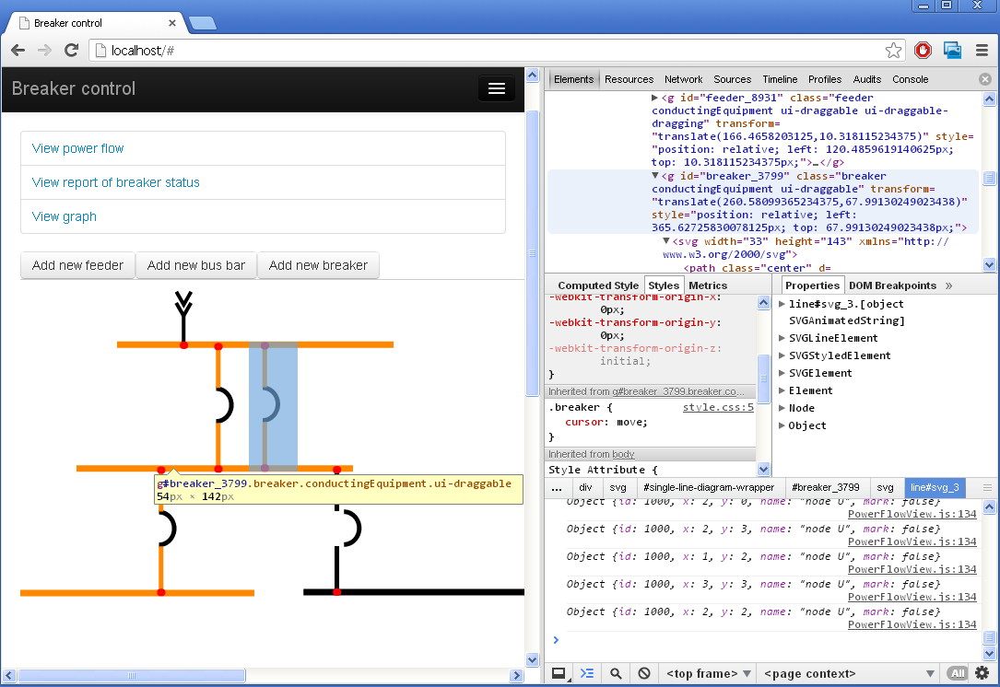
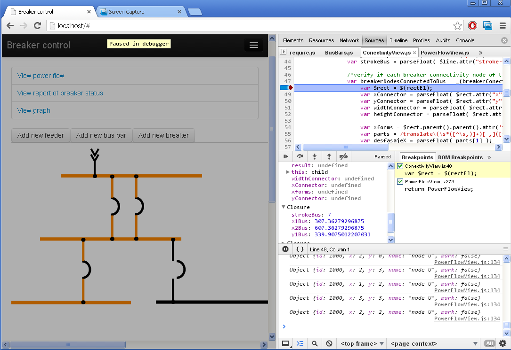
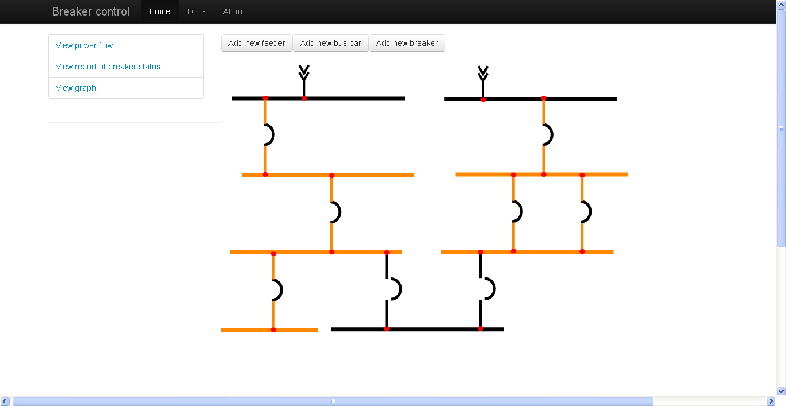
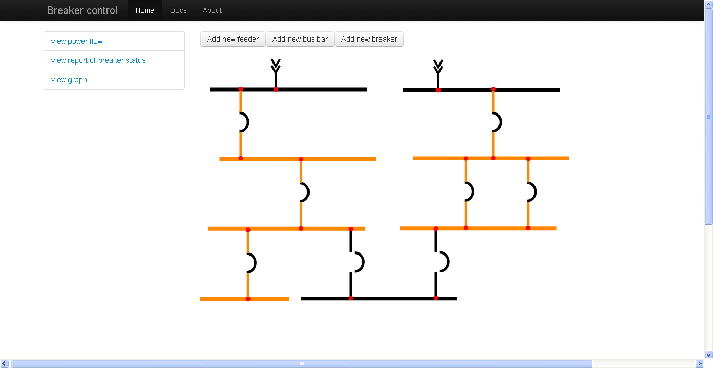
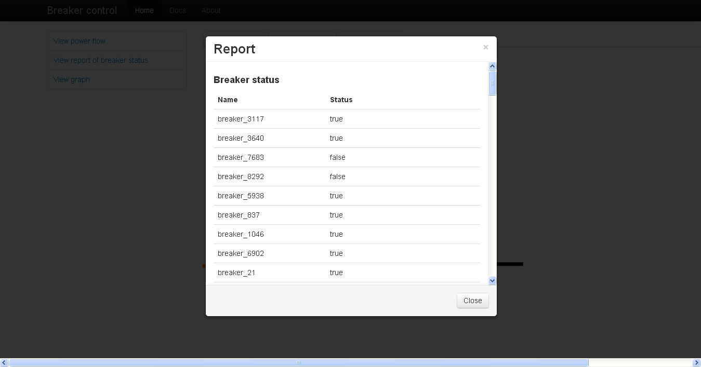
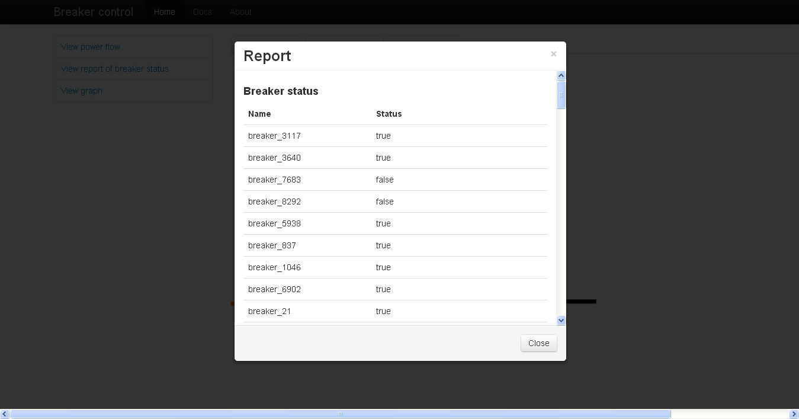

Documentation of the web application
Abstract
This web application is a demostration of a modern and non-trivial javascript application that helps to design an electrical network composed by feeders, bus bars and circuit breakers, and simulating the power flow of an electrical network. As a plus, the application shows a report of the status of the breakers and plot a curve in svg.
Demo
Download videoDescription of the web application, from a computational perspective
Levels of abstraction
First level of abstraction
At this level I use libraries. These libraries abstract the HTML DOM, SVG DOM access and ECMAScript APIs from diferent versions. Also, it handles common browser incompatibilities and lack of implementations through a good API.Libraries, frameworks and plugins:
- jquery
- jquery-ui
- jquery.svg.js
- jquery.svgdom.js
- jquery.svgplot.js
- underscore.js
- bootstrap.js
Second level of abstraction
At this level of abstraction I use a flexible framework called backbone.js which offers a minimalist solution to separating concerns in the application. Support for persistence layer and RESTful/JSON sync (ajax), models, views (with controllers), event-driven communication, templating and routing.Libraries, frameworks and plugins:
- backbone.js
- backbone.localStorage.js
Architecture at this level of abstraction:
At this level, I create several applications independently (called widgets), and, I wire these tiny applications at the next level of abstraction. The files of each tiny application are in different folders (see the folders at$APPLICATION_ROOT/app/javascript/widgets/).
Most important design patterns used at this level of abstraction:
- MVVM
Third level of abstraction
At this level I use a scalable, event-driven JavaScript architecture for developing widget-based applications, with the help of Aura.js. It takes advantage of patterns and best practices for developing maintainable applications and gives you greater control over widget-based development. Aura gives you complete control of a widget's lifecycle, allowing me to dynamically start, stop, reload and clean-up parts of their application as needed.Libraries, frameworks and plugins:
- aura.js
- require.js
- text.js
Folder structure at this level of abstraction:
The following paths contains customized code for aura.js.$APPLICATION_ROOT/app/javascript/core/,
$APPLICATION_ROOT/app/javascript/sandbox/
and
$APPLICATION_ROOT/app/javascript/security/.
Most important design patterns used at this level of abstraction:
- mediator
- facade
- publisher/subscriber
Comments about the implementation of some features
- Collision detection: I implemented my own, custom collision detection system to detect where the circuits are connected when the user drop an equipment at the svg stage (see next item). [source code]
- Drag and drop of electrical equipments represented as svg: I implemented a very basic and uncomplete drag and drop system to design the topology of the system.
Folder structure of the project

Tools used on the project
IDE: Sublime Text 2

SVG Editor: SVG-Edit


Chrome inspector
 The bussiness logic: Description of the web application from an electrical perspective
The widgetsingle-line-diagram is the most complex at this application because in order to implement the behaviour of the application a background in power flow analysys and electrical automation are required.
The requirements
- The application must be able to represent circuit breakers, feeders, bus bars.
- The user must be able to insert these components
- The application can simulate the flow of the power on the busbars connected to one or more feeders in conformance with the Kirchhoff law.
- The user must be able to change the status (open|close) of the circuit breakers and run the simulation again.
The solution of the requirement number 3
In this section I will describe only the requirement number 3, which is the most sofisticated from the electrical engineering perspective.
They are some considerations in order to plot consistently (in all the cases) a simulated state of an electrical topology designed dynamically by the user. In order to solve that, I am using some mathematical tools from power analysis:
- Kirchhoff's circuit laws
- Theory of electrical power flow and its underlying math (graph theory), including:
- Incidence matrix
- Connected component (I am not sure about the translation. In spanish, we call it "gráficos conexos")
Related work
Patent: Feeder automation for an electric power distribution system, by ABB Research Ltd.Screenshots of the project
 



 

Bugs to be fixed
- The busbar where the feeder is connected must be orange instead of black.
- The drag and drop of electrical components doesn't work properly